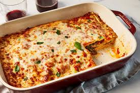

Lasagna originated in Italy during the Middle Ages. The oldest transcribed text about lasagna appears in 1282 in the Memoriali Bolognesi ('Bolognese Memorials'), in which lasagna was mentioned in a poem transcribed by a Bolognese notary;[20][21] while the first recorded recipe was set down in the early 14th century in the Liber de Coquina (The Book of Cookery)